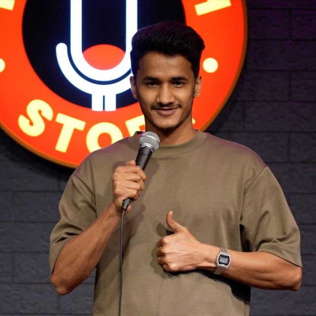
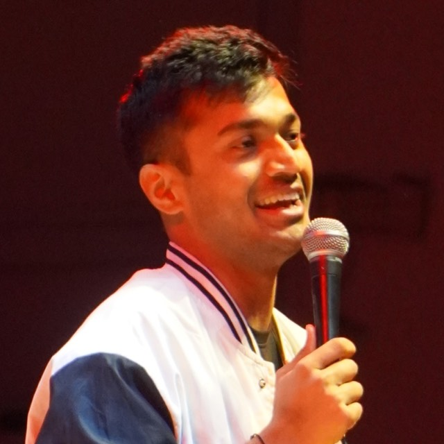

Dark circuit
Kaustubh Agarwal
Delhi Hindi stand-up. Creator of the comedy quiz show Akal Ke Ghode.
Open site → Retro FM radioRJ Vidit
Radio jockey by day, comic by night. Touring the solo show Namak Kam Hai.
Open site → Desi popPratyush Chaubey
Software engineer turned stand-up. Family, small towns and office-life trauma.
Open site →
Minimal editorialRohit Singh
Delhi club circuit. Placements, gig work, hecklers and the front page.
Open site →
Velvet & goldRajat Sood
Winner of India’s Laughter Champion. Pomedy — poetry plus comedy.
Open site →